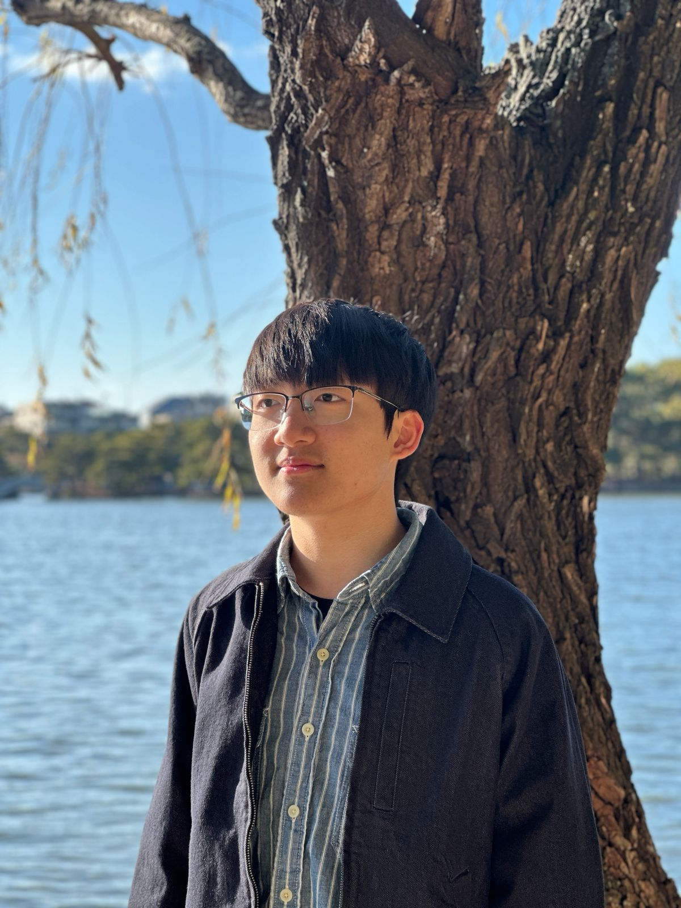

I compose music for film and concert, exploring storytelling through sound.

About
I approach composition as a form of storytelling. For film, my music is shaped by narrative and emotion. I especially enjoy scoring animation, while also working across a range of genres.
In the concert world, my music reflects on the relationship between nature, human experience, and life. As a Hong Kong–born composer, my current focus is integrating East Asian musical traditions with contemporary Western harmony. My most recent composition, Lost In Time, has been performed by the Adler Quartet in the Holywell Music Room.
Alongside composing, I am currently active as a classical pianist. I trained at the Hong Kong Academy for Performing Arts with Dr. Cheng Wai, and have performed in the United Kingdom, the Czech Republic, the United States, and Hong Kong.